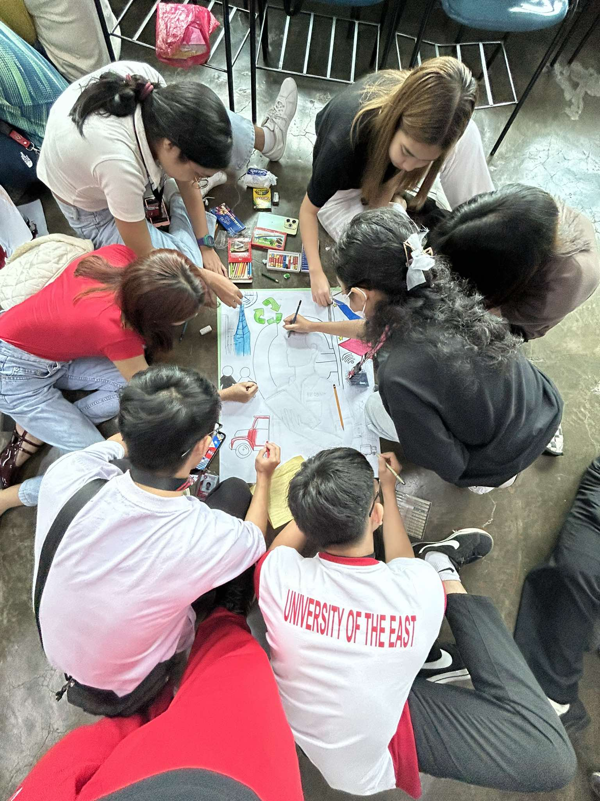
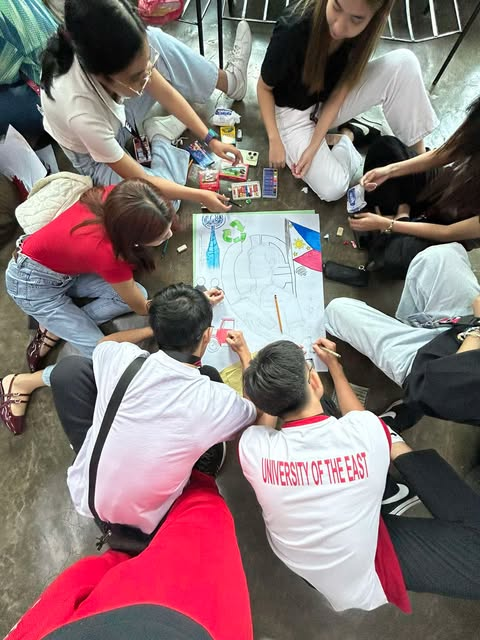

Painting Activity
This picture showcases an activity where we painted for the subject NSTP. We worked together as a group to express creativity and teamwork.
Makabayan Group Planting Activity
Last week, we participated in an outreach activity where we showed ALS students the importance of planting. Our group, the Makabayan group, planted herbal plants in our garden and contributed them to the University of the East (UE).
Charity Work
During my time in Junior High School, we organized a donation drive to help the homeless and shelters for homeless children. We provided canned goods, towels, and other essential items to support those in need.
Water Purification Project
In Senior High School, I collaborated with classmates to create a homemade water purification system. This portable system was designed to make water safer to drink, helping people access clean water more effectively.